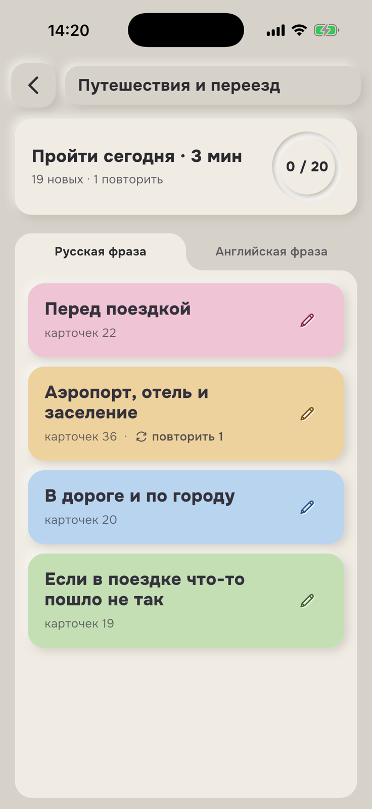
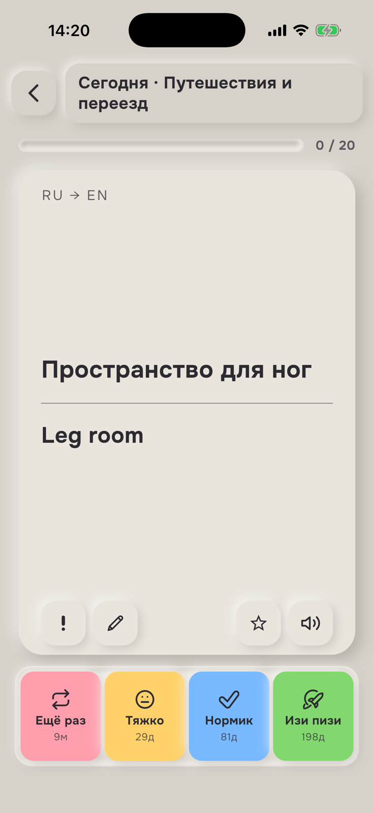

Вы выбираете нужные темы, пытаетесь вспомнить ответ и честно оцениваете результат. Всё остальное приложение делает само.
Шаг 1
Выберите полезное
Не пустой экран, а 74 готовые колоды.
Разговорные фразы, работа, поездки, отношения, времена и фразовые глаголы уже разложены по понятным темам. В обновлении появились сленг, связки для уверенной речи, вопросы на собеседовании, лексика для дома и другие практические темы.
видно время занятия до старта
видно количество новых и повторяемых карточек
готовые карточки можно редактировать под себя

Тема «Путешествия и переезд»
Шаг 2
Вспомните до подсказки
Одна карточка. Один честный ответ.
Сначала попробуйте вспомнить перевод. Затем откройте оборот и выберите, насколько легко дался ответ. Это не экзамен — это сигнал для следующего интервала.
Ещё раз9мТяжко29дНормик73дИзи пизи208д

Карточка после ответа
Шаг 3
Продолжайте спокойно
Прогресс отвечает на вопрос «что дальше?»
Сколько фраз уже в памяти, сколько пора повторить сейчас и какой объём ожидается на неделе — всё видно на одном экране.
О методе, своих карточках, офлайн-режиме и границах приложения.
Что такое FSRS?
Это алгоритм интервальных повторений. Он учитывает историю оценок карточки и рассчитывает следующий момент повторения отдельно для каждого направления.
Можно ли учиться без интернета?
Да. После входа обучение, готовые колоды и прогресс доступны офлайн. Сеть нужна для входа и синхронизации.
Можно ли добавлять свои слова?
Да. Вы можете создавать собственные карточки и редактировать готовые карточки для себя.
Приложение заменяет курс английского?
Нет. Это тренажёр слов и выражений. Он дополняет курс, преподавателя, чтение и разговорную практику.